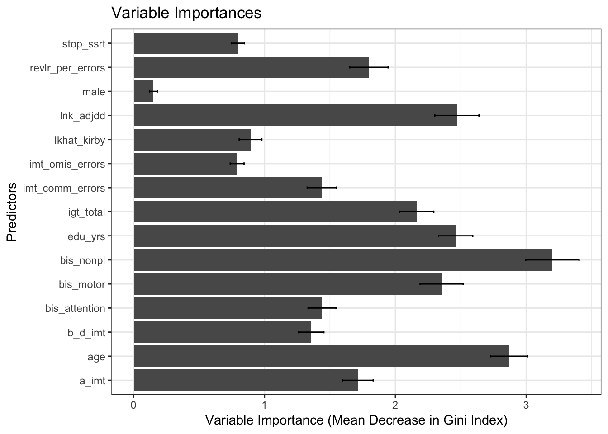
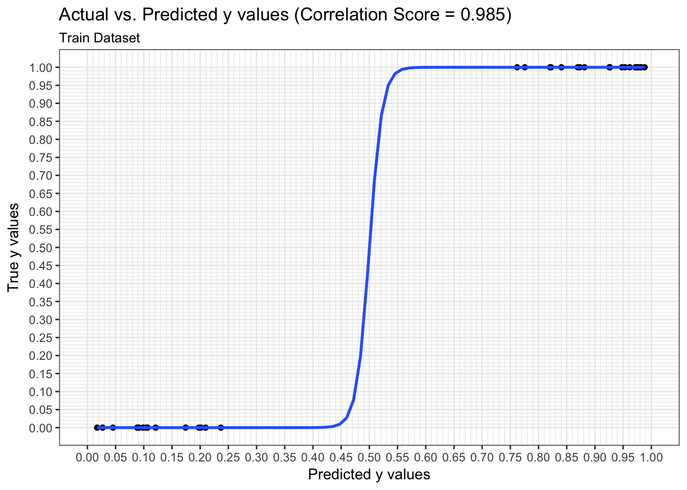
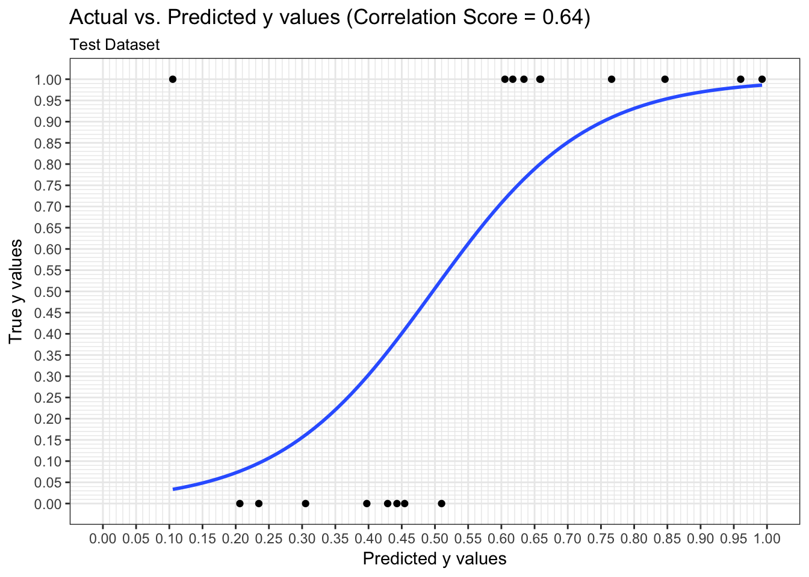
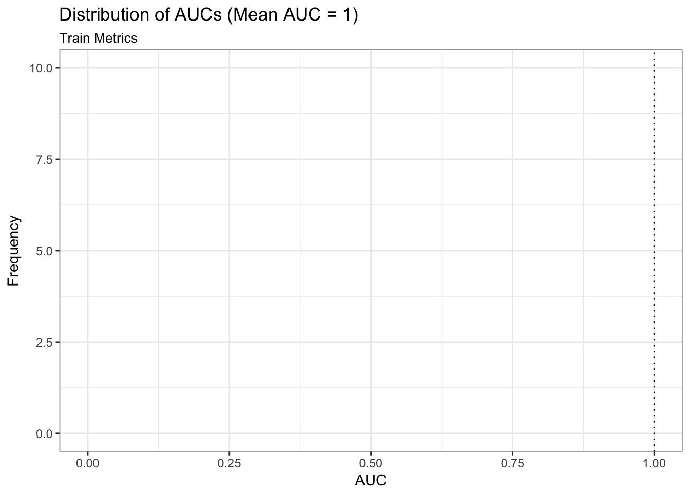
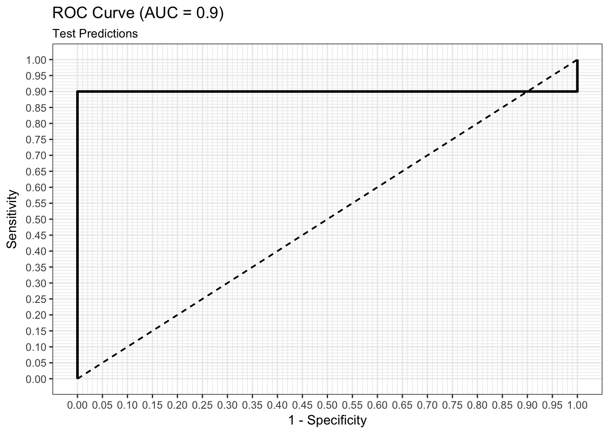

First we load our libraries and the Cocaine Dependence dataset.
library(easyml)
library(dplyr)
library(ggplot2)
data("cocaine_dependence", package = "easyml")
knitr::kable(head(cocaine_dependence))| subject | diagnosis | age | male | edu_yrs | imt_comm_errors | imt_omis_errors | a_imt | b_d_imt | stop_ssrt | lnk_adjdd | lkhat_kirby | revlr_per_errors | bis_attention | bis_motor | bis_nonpl | igt_total |
|---|---|---|---|---|---|---|---|---|---|---|---|---|---|---|---|---|
| 20031 | 0 | 29 | 0 | 16 | 6.90 | 5.51 | 0.97 | -0.12 | 346.3 | -5.848444 | -5.227870 | 2 | 11 | 21 | 24 | 6 |
| 20044 | 0 | 33 | 0 | 17 | 15.63 | 13.27 | 0.92 | -0.09 | 303.4 | -9.026670 | -5.832566 | 1 | 12 | 21 | 22 | 44 |
| 20053 | 0 | 57 | 0 | 13 | 25.44 | 16.41 | 0.87 | -0.27 | 214.6 | -6.115988 | -4.014322 | 5 | 13 | 19 | 17 | -16 |
| 20060 | 0 | 26 | 1 | 18 | 7.38 | 6.25 | 0.96 | -0.09 | 190.2 | -7.771655 | -5.272179 | 3 | 14 | 21 | 17 | 52 |
| 20066 | 0 | 38 | 0 | 13 | 31.54 | 10.09 | 0.88 | -0.61 | 273.9 | -5.791562 | -3.102204 | 5 | 11 | 20 | 23 | -6 |
| 20081 | 0 | 41 | 0 | 17 | 43.33 | 33.87 | 0.69 | -0.20 | 306.2 | -3.766913 | -3.676198 | 8 | 10 | 17 | 14 | -22 |
To run an easy_random_forest model, we pass in the following parameters:
cocaine_dependence,diagnosis,gaussian or a binomial model,preprocess_scale is used,results <- easy_random_forest(cocaine_dependence, "diagnosis",
family = "binomial",
exclude_variables = c("subject"),
categorical_variables = c("male"),
n_samples = 10, n_divisions = 10,
n_iterations = 2, progress_bar = FALSE,
random_state = 12345, n_core = 1)Now let’s assess the results of the easy_random_forest model.
TO BE EDITED.
results$plot_variable_importances_processed
output <- results$variable_importances_processed
knitr::kable(output, digits = 2)| predictor | mean | sd | lower_bound | upper_bound |
|---|---|---|---|---|
| age | 1.61 | 0.09 | 1.51 | 1.70 |
| male | 0.03 | 0.01 | 0.02 | 0.04 |
| edu_yrs | 1.32 | 0.07 | 1.25 | 1.39 |
| imt_comm_errors | 0.56 | 0.05 | 0.51 | 0.61 |
| imt_omis_errors | 0.25 | 0.03 | 0.21 | 0.28 |
| a_imt | 0.82 | 0.05 | 0.77 | 0.87 |
| b_d_imt | 0.53 | 0.05 | 0.48 | 0.58 |
| stop_ssrt | 0.29 | 0.04 | 0.25 | 0.33 |
| lnk_adjdd | 1.17 | 0.10 | 1.07 | 1.27 |
| lkhat_kirby | 0.28 | 0.02 | 0.26 | 0.30 |
| revlr_per_errors | 0.76 | 0.07 | 0.69 | 0.83 |
| bis_attention | 0.60 | 0.04 | 0.56 | 0.63 |
| bis_motor | 1.23 | 0.08 | 1.16 | 1.31 |
| bis_nonpl | 1.72 | 0.10 | 1.62 | 1.82 |
| igt_total | 1.10 | 0.05 | 1.05 | 1.14 |
We can examine both the in-sample and out-of-sample ROC curve plots for one particular trian-test split determined by the random state and determine the Area Under the Curve (AUC) as a goodness of fit metric. Here, we see that the in-sample AUC is higher than the out-of-sample AUC, but that both metrics indicate the model fits relatively well.
results$plot_predictions_train_mean
results$plot_predictions_test_mean
We can examine both the in-sample and out-of-sample AUC metrics for n_divisions train-test splits (ususally defaults to 1,000). Again, we see that the in-sample AUC is higher than the out-of-sample AUC, but that both metrics indicate the model fits relatively well.
results$plot_metrics_train_mean
results$plot_metrics_test_mean